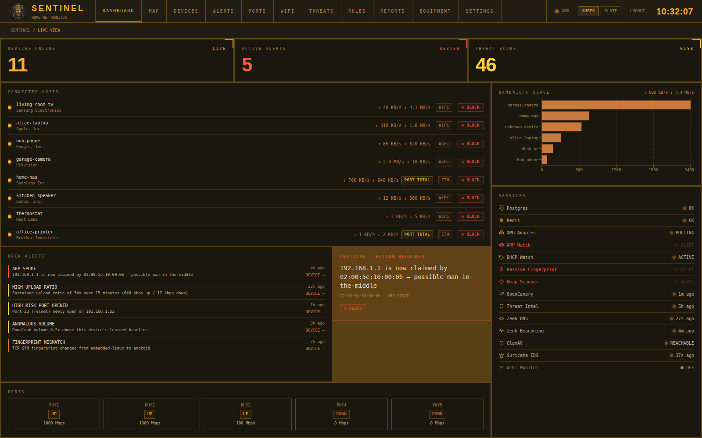

A home SOC and NOC
in one box.
Heimdall finds every device on your network, learns what is normal for each one, and alerts you to what is not. It runs on a spare machine as a Docker stack and never leaves your LAN.
$ curl -fsSL https://heimdall.it.com/install.sh | bash -s -- --tier=minimal$ curl -fsSL https://heimdall.it.com/install.sh | bash -s -- --tier=intermediate$ curl -fsSL https://heimdall.it.com/install.sh | bash -s -- --tier=full$ curl -fsSLO https://heimdall.it.com/download/heimdall.deb $ sudo apt install ./heimdall.deb # installs Docker and the compose plugin if missing $ sudo heimdall setup # tier, router, generates this machine’s secrets $ sudo heimdall start # pulls the images; starts now and at every boot
minimal = core stack · intermediate = + honeypot · full = + Zeek, ClamAV, Suricata (about 4 GB RAM). Installs to ~/heimdall; does not touch your router.

Eight passive detectors, plus the heavy hitters
ARP spoofing, rogue DHCP, OS fingerprints, per-device ML anomalies, plus Suricata, Zeek, ClamAV and a honeypot.
Every device, honestly measured
Inventory, WiFi signal, ports, traffic. Wired traffic is labelled port total because routers only count per port.
Block or quarantine
Cut a device off, or just its internet access. Auto-block is timed and optional. Needs a router that supports it.
Where you already look
Live dashboard, ntfy, email, a daily digest, CSV export and Prometheus metrics.
How it fits together
Each product, explained →Every source feeds a detector. Every detector raises alerts into one store. Correlation pairs related alerts into a single incident before anything is blocked or sent to you.
Your router?
Full equipment table →Router not listed?
Heimdall still runs. It builds the device list from your network’s own ARP table and keeps every sniffer-based detector. It cannot show per-device traffic or block devices. See what works →
Own one of the “simulator” routers?
“Tested” means a person ran Heimdall against that physical router. Help turn a blue chip green, or add yours with an AI assistant and our kit. Contribute →